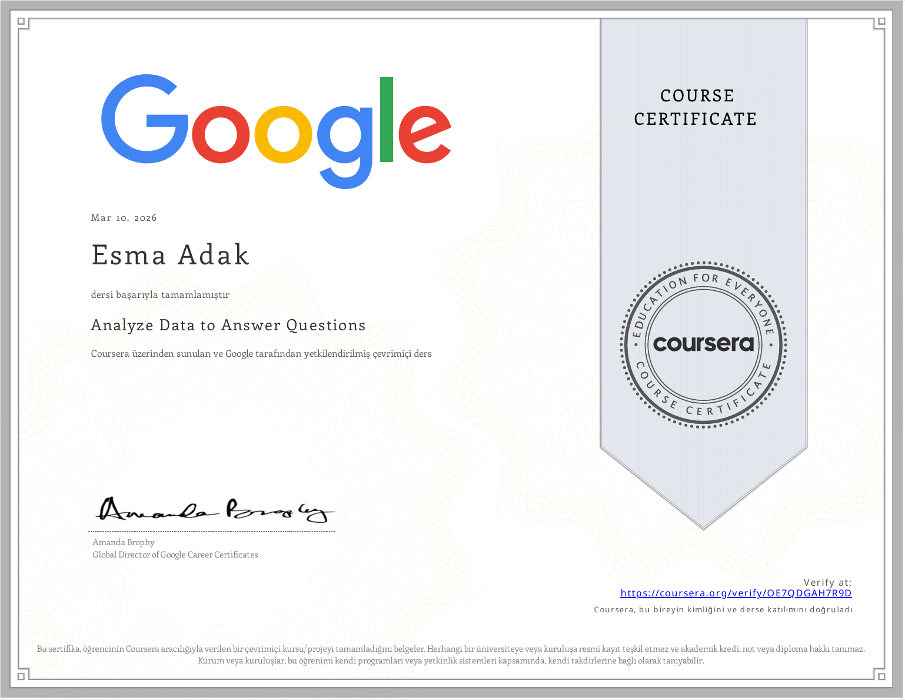
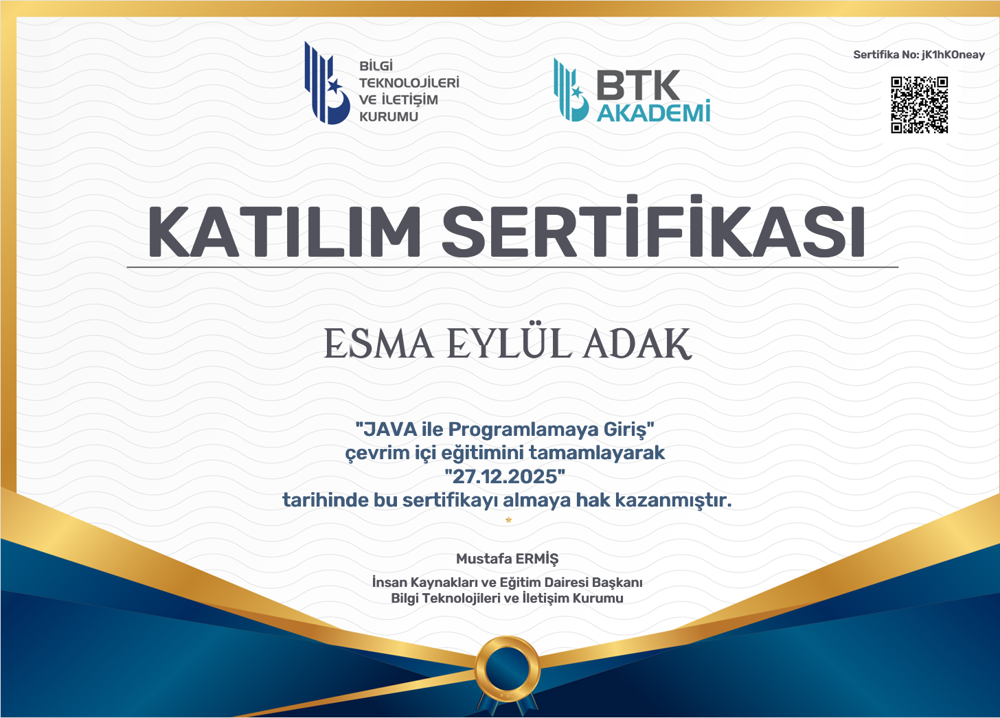
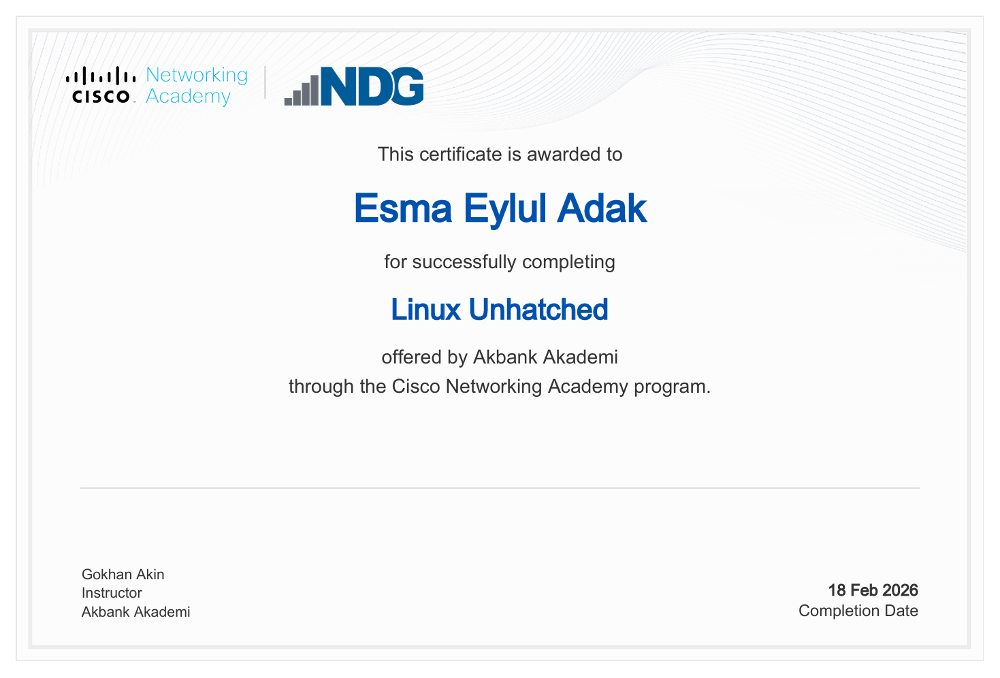
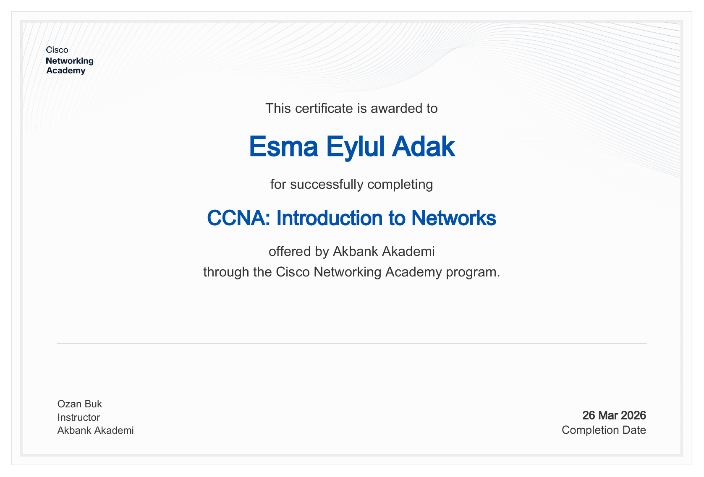
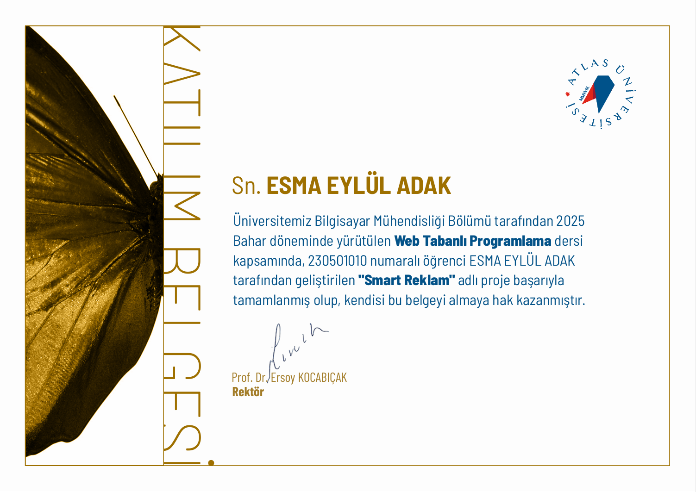
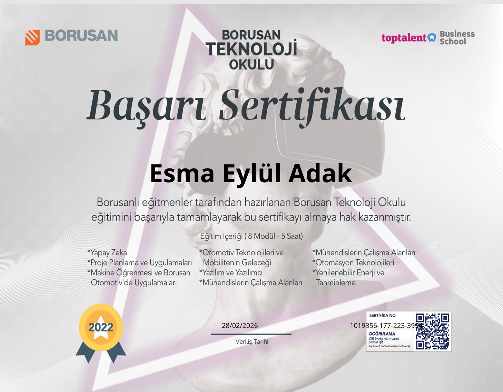

Sertifikalarım

Ask Questions to Make Data-Driven Decisions
2026

Foundations: Data , Data , Everywhere
2026

Analyze Data to Answer Questions
2026

Java ile Programlamaya Giriş
2025

Linux Unhatched
2026

CCNA: Introduction to Networks
2026

Web Tabanlı Programlama
2025

Borusan Teknoloji Okulu
2026